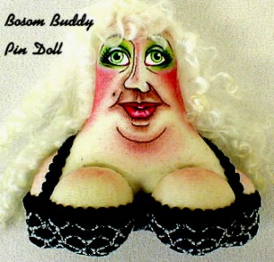

"Bosom Buddies" Is there something about these ladies that looks familiar? Inspired by real life, these "gravity-challenged" ladies always steal the show.
Originally designed for a very dear friend who used to (and still does) sing me a song that goes....."my bosom buddy and my lifelong pal..." (I believe it was from the "The Flintstones", many years ago), I decided to create a small and silly cloth doll that looked like her. From this humble beginning, the "Bosom Buddies" came to be. Now, they inhabit every corner of my studio, as people request these wonderfully silly paperweight dolls, customized to resemble their own "bosom buddies".
The "Bosom Buddies" pattern includes directions for both the pindoll and the paperweight. If you would like to order this pattern, please email me for more information. "Bosom Buddies" are also available as customized finished dolls. Contact me for prices and availability.
Click here to see
|